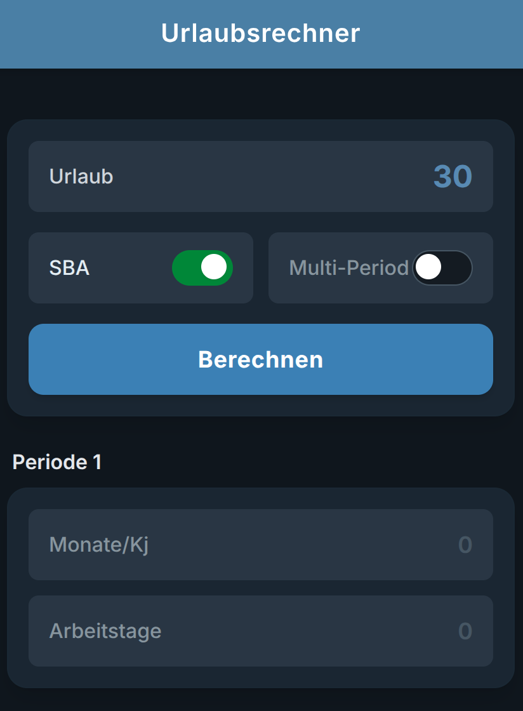

beach_access
Urlaubsrechner
Web-App zur Berechnung des individuellen Urlaubsanspruchs.
Berechnet anteiligen Urlaub nach Monaten und Arbeitstagen, berücksichtigt Zusatzurlaub und bleibt komplett offline nutzbar.
- Eintritt/Austritt, Wechsel der Arbeitszeit und SBA-Zusatzurlaub.
- Validierung mit klaren Hinweisen und nachvollziehbaren Ergebnissen.
- UX mit direkter Ergebnisanzeige und schneller Neu-Berechnung.

Local-first
Datenschutz